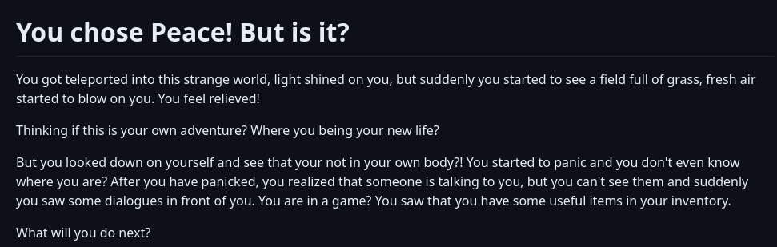

This is a CYOA project. CYOA stands for *choose your own adventure* so our project is interactable. And when I was choosing a topic, Ellen (my partner) also chose **Being reincarnated**. Before we started the project, we created a plan on what we should do and planned out the routes. We did all of our work on the IDE, so there was a lot of git adding, commiting, pushing, and pulling.
Mr.Mueller(My teacher) assigned this project for many reasons. One was to continue making us practice using the IDE. By practicing we are getting better at using the IDE and memorizing the commands and solving conflicts. Another reason is to practice communicating with other people. Because we need to communicate to know when to pull others changes so you can push.
There weren't any major challenges when we were working on this project. We just didn't time manage the work the best and the communcation between us was ok. We have multiple classes together so communicating to each other wasn't an issue. I also would have made the plan a little better because we did use most of the plan, but for two of our routes we just continued and went away from the plan.
 You can play the CYOA if you click this link.